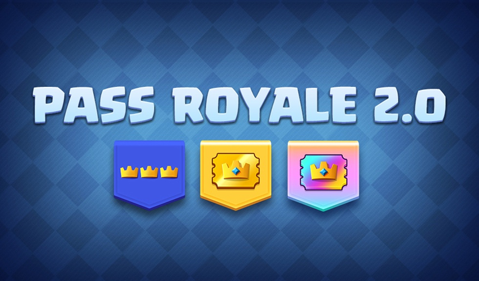

Prévia da Atualização revela Reformulação do Pass Royale
No mês passado a equipe de desenvolvimento do Clash Royale revelou algumas novidades que os jogadores podem esperar das próximas atualizações, dentre elas uma reformulação do Pass Royale como conhecemos, melhorias na aba de Eventos e uma nova jogabilidade…
Pass Royale da 45ª Temporada: Festa dos Goblins
⠀A temporada de Março do Clash Royale está no ar, com um novo Pass Royale! E é neste mês que é comemorado o aniversário do jogo, então a 45ª temporada é especial, com uma festa dos Goblins!⠀⠀⠀⠀⠀⠀⠀⠀⠀⠀⠀⠀⠀⠀⠀⠀⠀⠀⠀⠀⠀⠀⠀⠀⠀⠀⠀⠀⠀
Desenvolvedores revelam Roteiro para os próximos 6 meses

Estamos no segundo mês do ano e temos novidades sobre os próximos 6 meses do Clash Royale! A equipe de desenvolvimento do Clash Royale revelou um roteiro do que devem seguir, quais novidades os jogadores devem esperar e detalhes sobre mudanças no jogo!